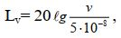
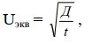
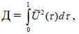

План
1. Ультразвук, его диапазон, ультразвуковое давление, интенсивность и частота колебаний.
2. Применение ультразвука.
3. Инфразвук.
4. Вибрация, ее действие на организм человека и гигиеническое требование.
5. Обеспечение вибробезопасных условий труда.
Ультразвук– это механические колебания упругой среды, отличающиеся от звука более высокой частотой, свыше 20 кГц.
Диапазон частот ультразвука подразделяется: на низкочастотные колебания (от 1,12·104до 1,0·105Гц), распространяющиеся воздушным и контактным путем, и высокочастотные колебания (от 1,0·105до 1,0·109Гц), распространяющиеся только контактным путем.
Ультразвук характеризуется ультразвуковым давлением (Па), интенсивностью (Вт/м2) и частотой колебаний (Гц).
Ультразвук поглощается различными средами, причем тем больше, чем выше их частота. Низкочастотный звук хорошо распространяется в воздухе, а высокочастотный – практически не распространяется. В упругих средах (металл, вода и др.) ультразвук мало поглощается и способен распространяться на большие расстояния, практически не теряя энергии. Поглощение ультразвука сопровождается нагреванием среды.
Ультразвуковые колебания могут распространяться направленными пучками, названнымиультразвуковыми лучами. Они на малой поверхности создают очень большое ультразвуковое давление, что используют для очистки и механической обработки деталей, сварки, пайки, дефектоскопии, гидролокации, ускорения химических процессов и др. Ультразвук применяют и в медицине для лечения заболеваний позвоночника, суставов, периферической нервной системы и т.п.
Воздействие от работы мощных установок может привести к поражению периферической нервной и сосудистой систем человека в местах контакта (вегетативные полиневриты, мышечная слабость пальцев, кистей и предплечья).
Основными документами, регламентирующими безопасность при работе с ультразвуком, являются «Санитарные нормы и правила при работе на промышленных ультразвуковых установках», а также ГОСТ 12.1.001-83 «ССБТ. Ультразвук. Общие требования безопасности» и ГТСТ 12.2-051-80 «ССБТ. Оборудование технологическое ультразвуковое. Требования безопасности».
Допустимые уровни ультразвукового давления нормируются в1/3октавных полосах частот и не должны превышать значений:
Среднегеометрическая третьоктавных полос, кГц | частота | Уровни звукового давления, дБ |
12,5 | 80 | |
16,0 | 90 | |
20,0 | 100 | |
25,0 | 105 | |
31,5…100,0 | 110 |
Допустимые уровни ультразвука в зонах контакта рук и других частей тела оператора с рабочими органами приборов м установок не должны превышать 110 дБ. Контроль уровня звукового давления нужно производить после установки оборудования, его ремонта и периодически в процессе эксплуатации не реже одного раза в год.
Для коллективной защиты от воздействия ультразвука можно использовать направления: уменьшение вредного излучения ультразвуковой энергии в источнике ее возникновения; локализацию действия ультразвука конструктивными и планировочными решениями; проведение организационно профилактических мероприятий.
Для уменьшения вредного излучения звуковой энергии в источнике рекомендуется повышать рабочие частоты источников ультразвука, что обеспечивает уменьшение интенсивности ультразвука.
Для локализации ультразвука обязательным является применение звукоизолирующих кожухов, полукожухов, экранов. Но лучше ультразвуковые установки размещать в отдельных помещениях, кабинетах, облицованных звукоизолирующими материалами. Воздействие ультразвука исключается и при дистанционном управлении.
В качестве СИЗ применяются противошумы (ГОСТ 12.4.051-78).
Инфразвук
Инфразвук – механические колебания упругой среды с частотами менее 20 Гц; в воздухе он мало поглощается и поэтому способен распространяться на большие расстояния. Инфразвук характеризуется звуковым давлением (Па), интенсивностью (Вт/м2), частотой колебаний (Гц). Уровни его интенсивности и ультразвукового давления выражаются в дБ. Землетрясения, извержения вулканов, морские бури сопровождаются излучением ультразвука. При работе тихоходных крупногабаритных машин и механизмов (компрессоров, дизельных двигателей, электровозов, вентиляторов, турбин, реактивных двигателей и др.) образуется инфразвук механического происхождения. Инфразвук аэродинамического происхождения возникает при турбулентных процессах в потоках газов или жидкостей.
Инфразвук как физическое воздействие оказывает влияние на весь организм человека: понижает слуховую чувствительность на всех частотах, возникает утомление, головная боль, головокружение, снижается острота зрения и слуха, нарушается периферическое кровообращение, появляется чувство страха и т.п.
Низкочастотные колебания с уровнем инфразвукового давления свыше 150 дБ совершенно не переносятся человеком.
Наиболее опасна частота 7 Гц в связи с возникновением резонансных явлений в организме, так как возможно совпадение с -ритмом биотоков мозга.
В соответствии с СН 22-74-80 уровни инфразвукового давления в октавных полосах со среднегеометрическими частотами 2, 4, 8 и 16 Гц не должны превышать 105 дБ, а в полосе с частотой 32 Гц – 102 дБ. Борьба с инфразвуком такая же как и борьба с шумом.
Вибрация, ее действие на организм человека и гигиеническое требование.
Вибрация– это колебательный процесс, связанный со смещением центра тяжести какого-либо тела от положения равновесия. Колебания при вибрации являются сложными, им свойственна апериодичность, часто носят импульсивный или толчкообразный характер.
Вибрацию, действующую по синусоидальному закону, характеризуютамплитудой смещения(наибольшее смещение колеблющейся точки от положения равновесия),колебательной скоростью(максимальное из значений скорости колеблющейся точки),колебательное ускорение(максимальное из ускорений колеблющейся точки), частотой.
При частоте больше 16…20 Гц вибрация сопровождается шумом.
Человек начинает ощущать вибрацию при колебательной скорости примерно равной 1·10-4м/с, а при скорости 1 м/с возникают болевые ощущения.
Различают локальную (местную) вибрацию, передающуюся через руки человека, и общую, передающуюся на тело сидящего или стоящего человека через опорные поверхности тела. На практике имеет место сочетание этих вибраций.
Общая вибрация может быть трех категорий:
1 – транспортная вибрация, действующая при движении;
2 – транспортно-технологическая вибрация, действующая при ограничен-ном перемещении,
3 – технологическая вибрация передающаяся на рабочие места.
Частоты внутренних органов человека лежат в области 6…9 Гц, поэтому резонансные частоты являются опасным и ведут к «вибрационной белезни». Локальная вибрация (клепка, срубка, бурение) вызывает различную степень сосудистых, нервно-мышечных, костно-сосудистых и других нарушений.
Основным нормативом в области вибрации является ГОСТ 12.1.012-78 «ССБТ. Вибрация. Общие требования безопасности».
Методы гигиенической оценки вибрации:
– частотный (спектральный) анализ нормируемого параметра;
– интегральный – по частоте нормируемого параметра;
– по дозе вибрации.
Причастотном(спектральном)анализенормируемыми параметрами являются средние квадратичные значения виброскорости V или виброускоренияадля локальной вибрации в октавных полосах частот, а для общей вибрации в октавных или1/3- октавных полосах частот.
Логарифмические уровни виброскорости Lv(дБ) определяются по выражению
гдеv– среднеквадратичное значение виброскорости, м/с.
При использовании метода интегральной оценки вибрации по частоте нормируемым параметром является корректированное значение контролиру-
~
емого параметраU(виброскороости или виброускорения), измеренное с помощью специальных фильтров или вычисляемое по формулам, приведенным в ГОСТ 12.1.012-78.
При оценке вибрациидозойнормируемым параметром является эквивалентное корректированное значение Uэкв, определяемое по выражению
где Д – доза вибрации, которая вычисляется по выражению
гдеU~()– мгновенное корректированное значение параметра вибрации в момент времени , получаемое с помощью корректирующего фильтра с характеристикой в соответствии с таблицей, приведенной в стандарте; t – время воздействия вибрации за рабочую смену.
Обеспечение вибробезопасных условий труда.
Вибробезопасными называются условия труда, при которых вибрация не оказывает на работающего неблагоприятного воздействия.
Вибробезопасные условия труда обеспечиваются:
– применением вибробезопасных машин;
– применением средств виброзащиты, снижающих вибрацию на путях ее распространения;
– проектированием производственных помещений и технологических процессов;
– своевременным ремонтом и контролем; – режимами труда и отдыха.
Классификация методов и средств приведена в ГОСТ 12.4.046-78.
Виброопаснымисчитаются машины, которые хотя бы при одном из режимов эксплуатации генерируют вибрации, требующие мероприятий и средств по защите работающих.
Снижение вибрации:
– уменьшение динамических процессов, вызываемых ударами, резкими ускорениями;
– устранение дисбаланса вращающихся масс;
– исключение виброопасных технологических процессов; – установление рациональных режимов труда и отдыха;
– применение СИЗ для рук, ног.
1. Что такое вибрация?
2. Как действует вибрация на организм человека?
3. Какие существуют категории вибрации?
4. Какими способами обеспечиваются вибробезопасные условия труда? 5. Основные способы снижения вибрации.